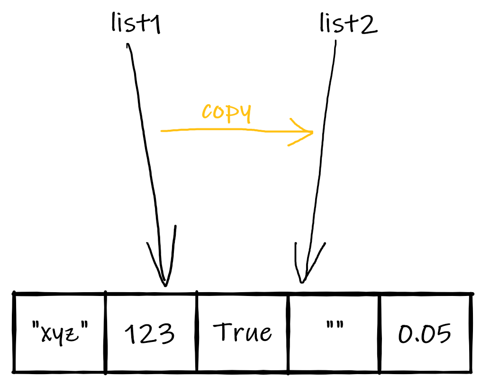
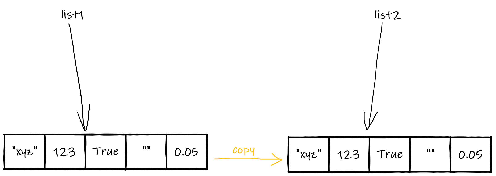
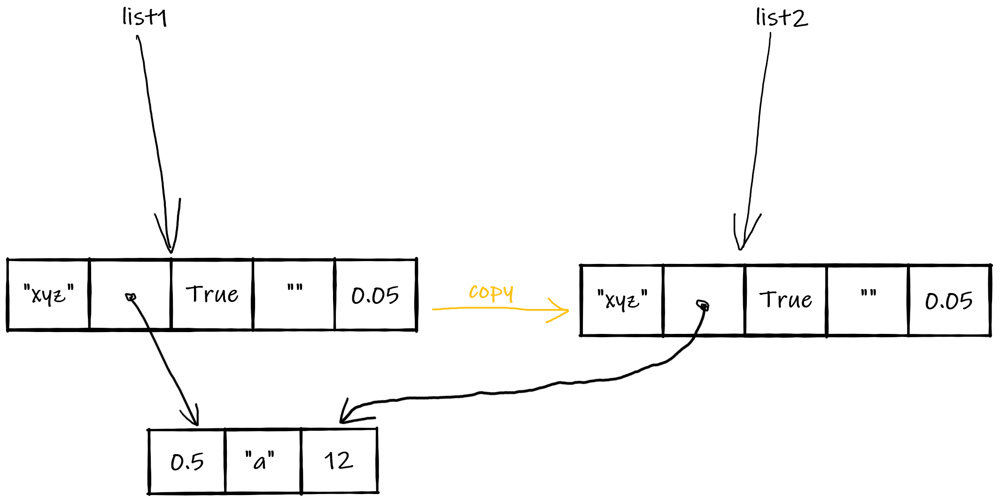
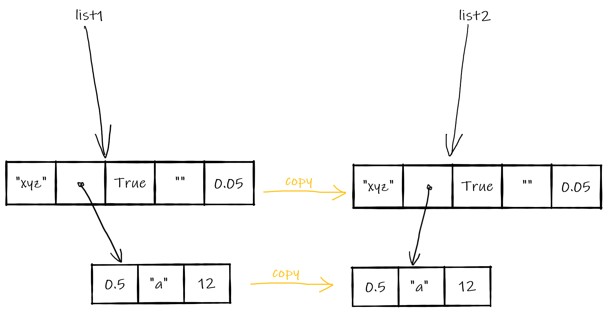

-
What is a list in Python?
What is a list in Python?
- A list is an ordered collection of objects of any type. A list is itself an object.
- The list type in Python is called list.
- list is a sequence type, along with str, tuple and range.
- A list literal is denoted using square brackets, with the elements of the list specified inside the brackets and separated by commas. The elements can be literals or variables.
- A list can be empty.
- A list can contain another list.
- Unlike strings, lists are mutable objects in Python, which means that their value can be modified 'in place' i.e. at the memory location where they are stored. Mutability will be demonstrated in the section on copying strings.
Defining lists (run interactively) a_string = "hohoho" an_int = 12345 a_list = ["hello", 4, a_string, 5.6, "a", an_int, True] type(a_list) empty_list = [] listWithListElement = ["hi", ["Jane", "Doe", 21], True, 55.3]
Write a script that reads in a user's name, surname, date of birth and address and stores all the information in a list, kept in a variable called data1). The address should be stored in a sub-list containing the house number, street name and town/city name. Once the list is constructed, the script should print the variable that contains the list.
-
List operations and methods
List operations and methods
As lists are mutable, they support both operations that do not change the sequence object and those that do.
-
Operations that do not change the list object
Operations that do not change the list object
These operations are the ones also supported by the string sequence type.
- Concatenation (using operators + and *)
Concatenation does not modify the lists that are being concatenated but returns a new list.
List concatenation (run interactively) ["a", "b"] + ['c', 'd'] ['1', '2'] * 3 a_string = "hohoho" an_int = 12345 a_list = ["hello", 4, a_string, 5.6, "a", an_int, True] a_list + ['additional string'] # check if a_list has changed a_list
Extend the script you wrote in excercise ? to ask for country of birth and create a new list by concatenating the existing one with a list containing the new piece of data. Save the new list in a variable called data2.
- Membership checking (using operator in)
The operator in allows us to check if an object is an element of a list.
Checking for list membership (run interactively) theList = ['abc', 3, True, ''] '' in theList 3 in theList 4 in theList
Extend your script further to check membership in the list for one value you expect to be in the list and one that you do not expect to be there. It should print the results in the following format:
string_expected_to_be_there is in the list: boolean_value
string_not_expected_to_be_there is in the list: boolean_valueThe values in purple are placeholders. An actual printout may be:
"Mary" is in the list: True
"Beth" is in the list: False - Accessing parts of a list by index (using operator [])
As with strings, square brackets can be used to access a single element of a list or a group of contiguous elements. The way indices are used with the square brackets is exactly the same as for accessing substrings. Positive and negative index values can both be used.
Accessing elements of a list (run interactively) laugh = "hohoho" letters = ["a", "b", 'c'] a_list = ["hello", 4, letters, 5.6, "a", laugh, True] a_list a_list[0] a_list[2:5] a_list[5:] a_list[:-5] # accessing element in sublist a_list[2][1] # accessing substring in string element a_list[5][:2]
- Comparison
Equality operators
These can be used between any two lists. For two lists to be equal, they need to be of the same length and their elements in the same position must be of the same type and have the same value.
Equality of lists (run interactively) ['three'] == [3] ['3', 4] == ['3', 4] [2] != [3] ['one', 'two', 'three'] == ['one', 'two']
Relational operators
Two lists can be compared with relational operators if their elements in the same position are individually comparable. Comparisons are carried out left to right i.e. the relation between an element pair carries more weight if the elements are at a lower index.
Relational operations on lists (run interactively) ['3', 4] < ['3', 4] # False ['2', 4] < ['3', 3] # True ['2', 4] < [3, 3] # Error!
Add code to your script to compare the variable data2, first with a new list that is identical to it, then to a list that is different, and print out the results clearly.
Extend your script with code that uses indices to read out the name and house number and print:
name lives at number house_number.
name and house_number are placeholders for the stored name and house number.
- Concatenation (using operators + and *)
-
Operations that change the list object
Operations that change the list object
- With square brackets (the [] operator) we can:
- assign a new object to a list element
Setting individual element values of a list (run interactively) myList = ["hello", "hi", 5, "how are you"] myList myList[2] = "bonjour" myList
- replace any contiguous portion of a list with another list
Replacing a sublist (run interactively) myList = ["hello", "hi", 5, "how are you"] myList myList[2:3] = ["bonjour", "hola"] myList myList[-1:] = ["good day"] myList
- delete a list element by index
Deleting a list element by index (run interactively) myList = ["hello", "hi", 5, "how are you"] myList # use the del operator to delete the second item (index 1) del myList[1] myList # OR # use the pop method to delete the second item of the resulting list myList.pop(1) myList
- delete the first list element with a given value
Deleting a list element by value (run interactively) myList = ["hello", "hi", 5, "how are you", "hi"] myList # delete the item with value "hi" # notice that only the first appearance of "hi" is removed each time myList.remove("hi") myList myList.remove("hi") myList
Working on the same script, add code that accesses the elements of the list in data2 via indices to modify the name and house number, and delete the last element (country of birth), then prints out the result.
- assign a new object to a list element
- With square brackets (the [] operator) we can:
-
Copying lists
Copying lists
There are several levels of copying that can be carried out with lists.
Creating a new name for a list vs. copying
New name
Giving an existing list a new name (list2 = list1) 
Assigning a list object to a new name results in the creation of a new name for the list. The new name points at the exact same list in memory that the assigned object is at. What is copied is only the connection (pointer) from name to object. It is a copy of a reference.
Create a new name for a list (run interactively) list1 = ['abc', 123, 1.23, True] list2 = list1 list1 list2 # check it is the same list list1[1] = 456 list1 list2
Copy
Copy (list2 = list1.copy() or list2 = list1[:]) 
A copy of a list results in the creation of a new name for the list and a copy of the content in a new memory location. The new name points to the copy of the content. It is a copy of a value.
List copy (run interactively) list1 = ['abc', 123, 1.23, True] list2 = list1[:] list3 = list1.copy() # check copies are different lists list2.append('newEl') list3.remove('abc') list1 list2 list3Shallow copy vs. deep copy
Copying a list with nested lists requires a special operation i.e. a deep copy. The copy discussed above is known as a shallow copy.
Shallow copy
Shallow copy (list2 = list1.copy() or list2 = list1[:]) 
The figure Shallow copy shows what happens when the function copy() is called on (or equivalent operator [:] is applied to) a list with nested lists.
The only object copied is the top-level list. For nested lists, only the reference (pointer) is copied.
List copy (run interactively) list1 = ['abc', [1, 2, 3], 1.23, True] list2 = list1[:] # see that the lists are the same list1 list2 # change original list top level list1[2] = 4.567 # change original list nested level list1[1][1] = 222 # see list1 list1 # see list 2 # top level is not modified # nested is modified (because shared) list2
Deep copy
Deep copy (list2 = copy.deepcopy(list1)) 
When a deep copy is made, the whole hierarchy of nested lists is copied, to any level of depth. For this, the function copy.deepcopy().
List copy (run interactively) # import the copy module import copy # define list1 and create a deep copy list1 = ['abc', [1, 2, 3], 1.23, True] list2 = list1.deepcopy() # see that the lists are the same list1 list2 # change original list top level list1[2] = 4.567 # change original list nested level list1[1][1] = 222 # see list1 list1 # see list 2 (no modifications) list2
There is a person with the same name as that in data2, but with entirely different other details. Use deepcopy in your existing script to create a list with information about this other person. Add code that prints out both lists.
-
Creating lists from strings
Creating lists from strings
Casting a string to list
Casting a string to a list returns a list with one string element for each character in the original string.
Casting strings to lists (run interactively) myName = "Jane Brown" list(myName)
Splitting a string
With the split() method we have more control over how the string is split into list elements, in that a separator can be specified. When the separator is not specified, the split creates substrings of non-whitespace characters that were separated by whitespace characters in the original string.
The split method (run interactively) myName = "Jane Brown" myName.split() wordsStr = "last, first, penultimate, second, unspecified" wordsList = wordsStr.split() wordsList type(wordsList) # use a separator wordsStr.split(sep=", ")
-
Creating strings from lists
Creating strings from lists
Casting
Casting from list to string will not produce the result we generally want. The returned string is just the list, printed out.
Casting list to string (run interactively) str(["a", "b", "c"])
Joining elements into a string
The string type provides a method join() for joining elements of an iterable object (which a list is) into a string.
The syntax for calling the method is <separator string object>.join(<list object>), i.e. the method is called on a string object that should act as separator in the resulting string.
Joining list elements into a string (run interactively) ' '.join(["a", "b", "c"]) ''.join(["A", "n", "n"]) separator = ", " list = ["python", "javascript", "java"] separator.join(list)
Write a new script that contains the following line:
names = "AMY, bob, cOn, DAn"
Assuming that you know that there are 4 names in the text string, use string-to-list conversion, string methods and list-to-string conversion to correctly capitalise the names in the list in your script. Print the tidied text string.
-
-
Tuples
Tuples
In the section on list comprehensions, we have seen a structure called the tuple. Tuples are sequences, like lists, but are immutable. They are used in contexts where multiple values are needed instead of one value. Tuple literals can be defined either as a comma-separated list or a comma separated list in parentheses.
Defining tuples t1 = 1, 2, 3 t2 = (1, 2, 3) t3 = 3, 4, 5 t1 == t2 # expected output: true t1 == t3 # expected output: false
On a command-line interface to the Python interpreter, type the following:
a_tuple = ("a", 3, True, "b")In the next line use the indexing operator to access the second element.
Next, try to use the indexing operator to set the third element to a new value. What happens? Why?
-
Picking a random element from a list
Picking a random element from a list
Many programs will require the generation of some sort of random information. Usually, a random number is generated in a set range.
Python has a function that allows picking a random item from a list directly, random.choice().
Picking a random element (run interactively) aList = ['hello', 4, ['a', 'b', 'c'], 5.6, 'a', 'hohoho', True] aList import random random.choice(aList) random.choice(aList) random.choice(aList) random.choice(aList) random.choice(aList)
Start with the following code in a new script:
names = "Amy, Ben, Con, Dan, Emi, Fi"
These are names of people that entered a raffle. Pick a name at random and announce them as the raffle winner.
-
What is a list in Python?
-
List operations and methods
-
Tuples
-
Picking a random element from a list
Jelena Vasić